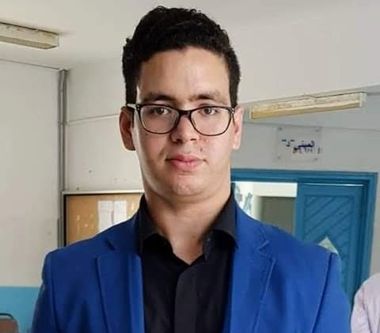

WASSIM BEN ALI
28 ans
rue Habib karma,Nabeul,8000,tunisie
benaliwassim23@gmail.com
+216 21688882
D O M A I N E S D ' E X P E R T I S E
J'ai travaillé sur différents types de projets, et je maitrise
l'automatisme, la maintenance informatique, l'arduino, la domotique,
la programmation sur des logiciels
Aptitude et compétences personnelles
Informatique :
Langage de programmation : html5/css , C# ,java , python
Système d'exploitation : Windows, Linux
Bureautique :Microsoft Office.
Logiciels : Interface de développement
Sociales :
Travail de groupe.
Facilité d'intédration et d'adaptation aux nouvelles cultures et langue.
Organisationnelles :
Organisation et gestion dans le cadre de la réalisation d'un projet.
Rigueur, esprit logique, méthodique et inaginatif.
Adaptation rapide à un groupe de travail.
E X P É R I E N C E P R O F E S S I O N N E L L E
TECHNICIEN RÉPARATION INFORMATIQUE
S S I T
J A N V . 2 0 2 2 - S E P T . 2 0 2 2
•maintenance informatique
•installation des logiciels informatiques dédiés aux écoles et lycées
TECHNICIEN RÉSEAU
S O C I É T É N E T T C O M E T S E R V I C E S
N O V . 2 0 1 8 - F É V R . 2 0 1 9
Installation réseaux télécommunications et fibre optique
TECHNICIEN ÉLECTRICIEN
S O C I É T E L A A R I B I E N G I N E E R I N G
N O V . 2 0 1 8 - F É V R . 2 0 1 9
• Installation des caméras de surveillances
• Installation des systèmes d'alarmes, système domotique
• Installation électrique domestique
• Maintenance des équipements électriques
F O R M A T I O N S C O L A I R E
INSTITUT SUPÉRIEUR DES ETUDES TECHNOLOGIQUES DE NABEUL
L I C E N C E E N G É N I E É L E C T R I Q U E spécialite Automatisme Informatique Industriel
LYCEE SECONDAIRE MAHMOUD EL MESSADI NABEUL
B A C C A L A U R É A T S C I E N C E S E X P É R I M E N T A L E S 2 0 1 4
Langues :
Arabe : courant
Français : courant
Anglais : Bon niveau
Loisirs :
L'informmatique
Le football